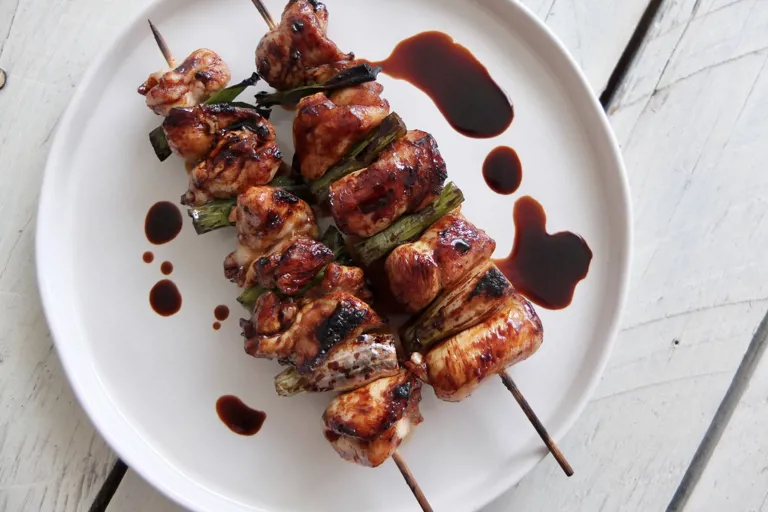

Chicken yakitori

Description
This irresistible chicken yakitori recipe is a simple, delicious way to barbecue chicken, combining sweet, sticky tare glaze and hot charcoal to great effect.
Remember to keep your chicken and spring onion bites the same size for even cooking, and don't forget to soak your skewers to stop them burning!
Ingredients
-
Chicken
- 2 chicken thighs
- 2 chicken breasts
- 6 spring onions, cut into 2.5cm lengths
-
For The Tare
- 500ml of chicken stock
- 2 spring onions
- 1 knob of ginger, about 2.5cm in size, sliced
- 50ml of sake
- 100ml of mirin
- 1 tbsp of sugar
- 50ml of tamari
- 50ml of dark soy sauce
- 50ml of water
Steps
- Add all the tare ingredients to a saucepan, bring to the boil and reduce by half until thick and glossy.
- Divide the tare into 2 bowls – one shallow bowl for dipping the skewers while you’re cooking them and one for serving at the table.
- Remove any skin from the chicken and cut into rectangular strips.
- Fold each strip, pushing a skewer through each side to create a domed effect.
- Alternate each piece of chicken with a section of spring onion and brush lightly with oil.
- Heat a barbecue for direct grilling. When the flames have died down and the coals are white, gently grill the chicken skewers, turning often.
- Once the chicken skewers are around 80% cooked, begin dipping them into the tare and returning to the grill to caramelise